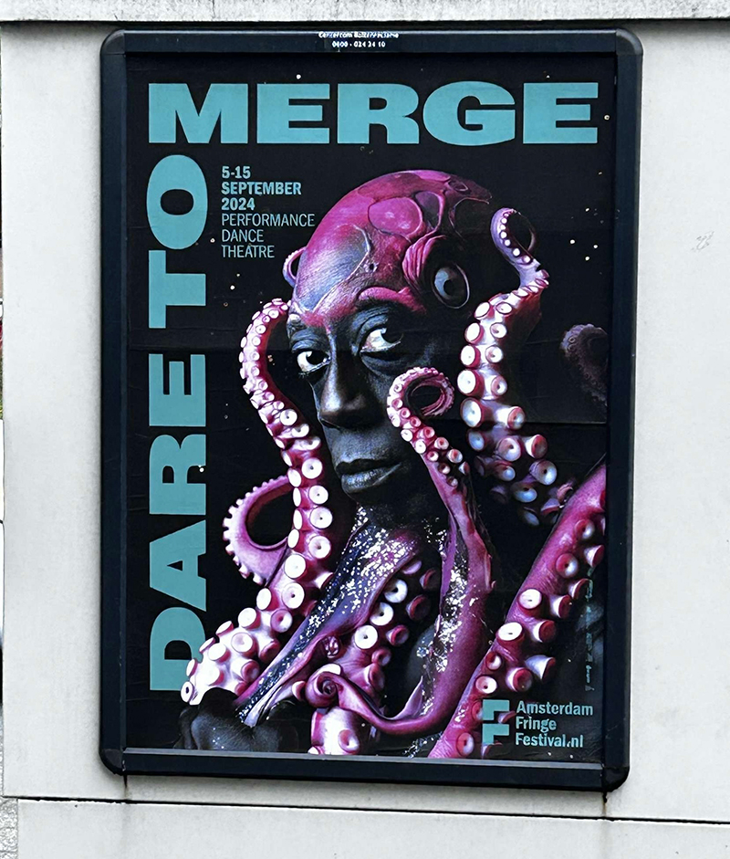
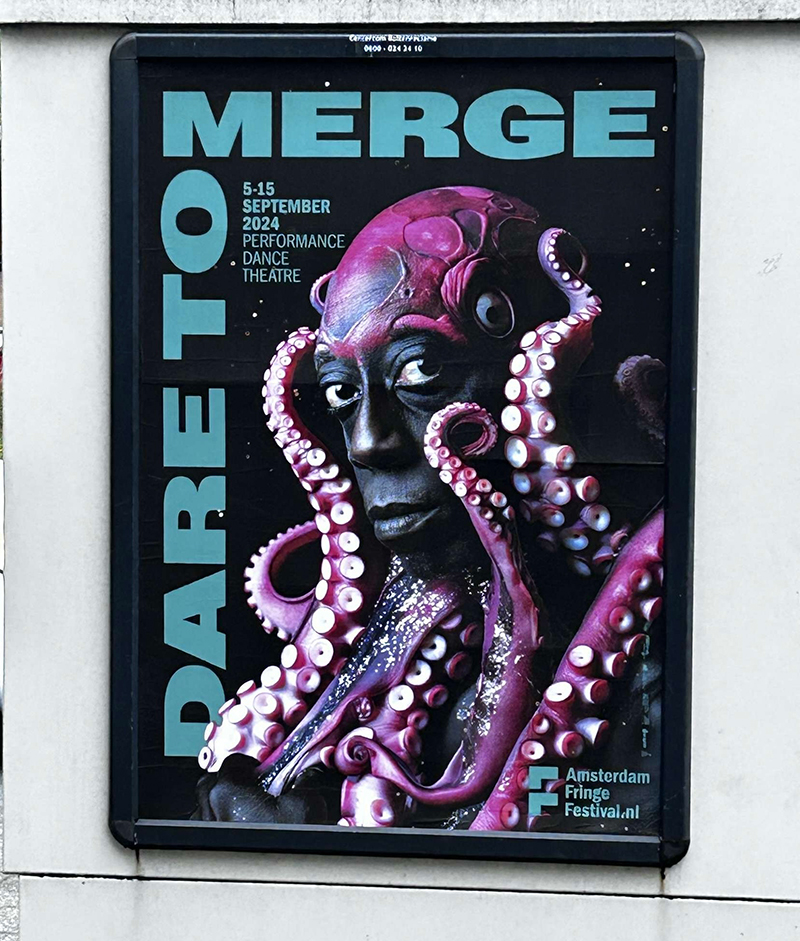
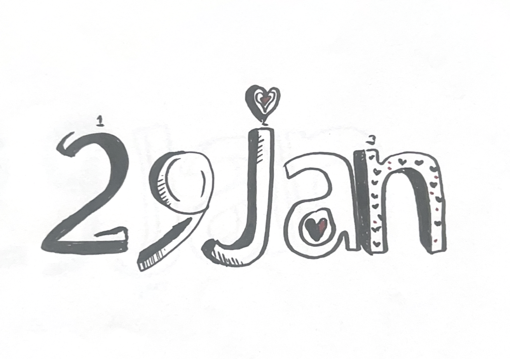
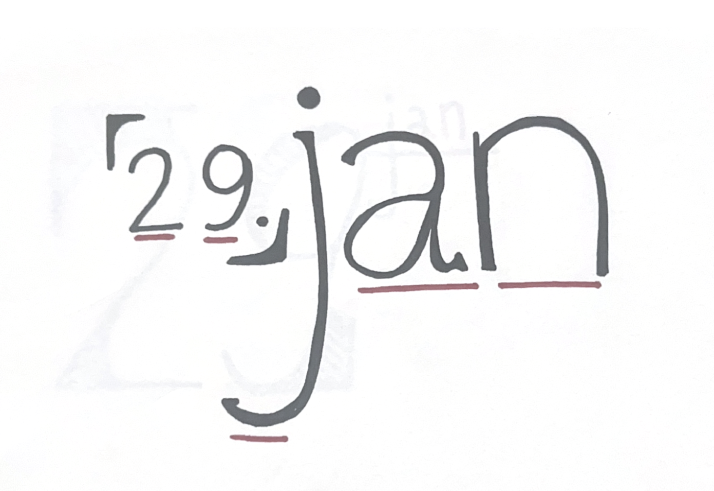
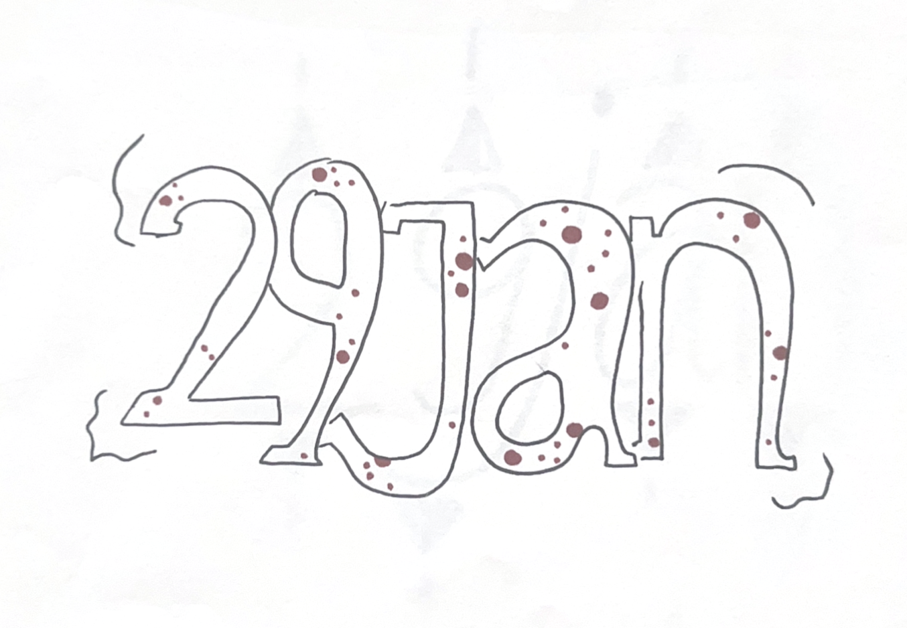
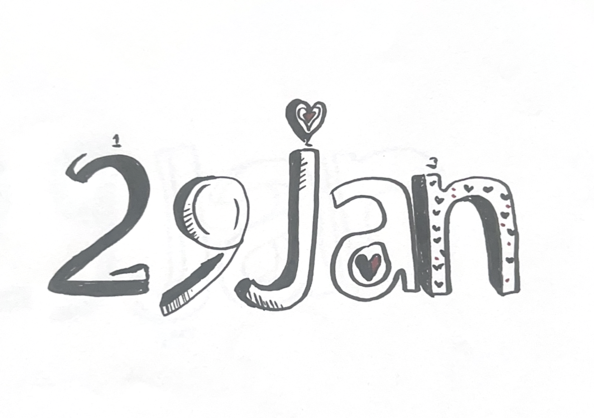
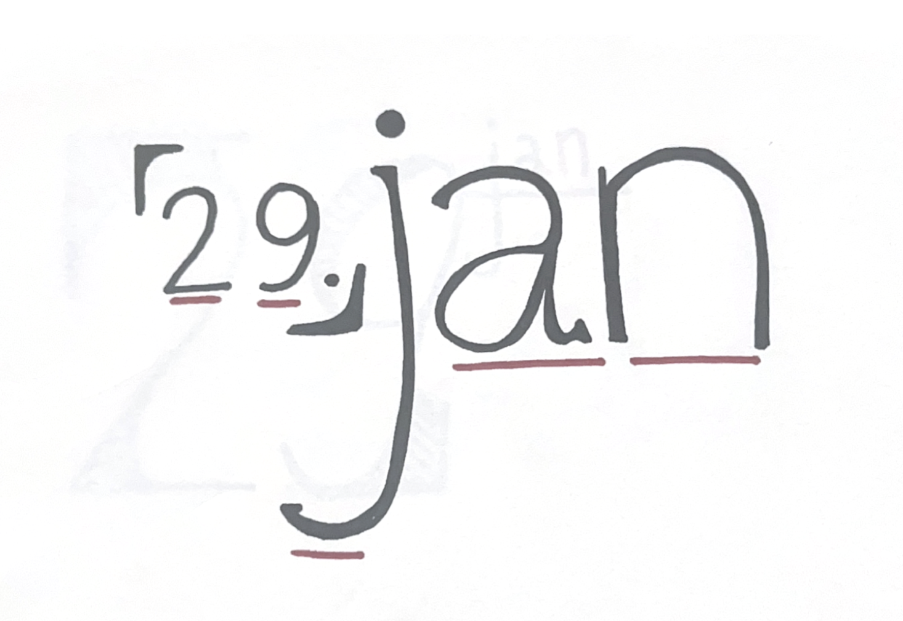
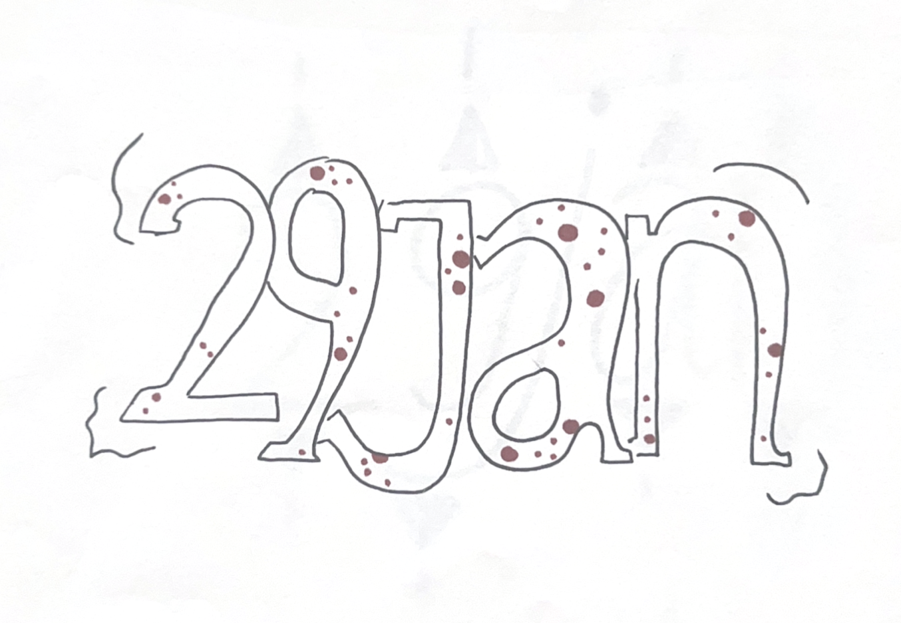

Back
Back
Akzidenz Grotesk website
Project Digitale Letterproof
Tijdens mijn minor Visual Interface Design heb ik het vak Typografie gevolgd. Voor het eindproject van dit vak heb ik onderzoek gedaan naar verschillende lettertypes die ik in mijn omgeving tegenkwam. Mijn inspiratie haalde ik uit entertainmentposterontwerpen. Ik fotografeerde meerdere posters en onderzocht welke lettertypes gebruikt zijn, wie ze heeft ontworpen, uit welk jaar ze zijn uitgebracht etc...
Daarnaast was het de bedoeling om de gekozen lettertypes op een visueel aantrekkelijke manier tentoon te stellen. Met het onderzoek dat ik had gedaan, kon ik bepalen hoe ik deze lettertypes aan het publiek wilde presenteren. Ik heb ervoor gekozen mijn bevindingen te tonen via een website die ik zelf in HTML heb gecodeerd. Op deze website laat ik verschillende aspecten zien van wat ik over de lettertypes heb ontdekt.
Het proces
Als eerste stap ben ik begonnen met het verzamelen van diverse entertainmentposters. Ik heb er een aantal gefotografeerd die mij aanspraken. Na het verzamelen van deze foto's was het de bedoeling om één lettertype te kiezen waar ik verder onderzoek naar zou doen.
 

Vervolgens heb ik me verdiept in het gekozen lettertype. Ik heb online onderzoek gedaan en met behulp van een online font finder het juiste lettertype kunnen vinden. Dit leidde me naar Akzidenz Grotesk, een bekend lettertype dat al jarenlang voor commerciële doeleinden wordt gebruikt.
Lettertype variatie schetsen
Ik heb verschillende schetsen gemaakt met dit lettertype, en dit deed ik met de letters en cijfers van mijn verjaardagsdatum (29 januari).
 





Kalenderblad
Op basis van de bovenstaande schetsen heb ik een kalenderblad ontworpen. Hierbij heb ik gelet op de kenmerken van Akzidenz Grotesk en deze in mijn ontwerp verwerkt. Ik heb gespeeld met verschillende lijnen en vakken en gebruik gemaakt van meerdere diktes.